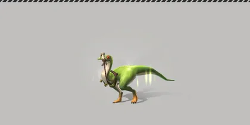
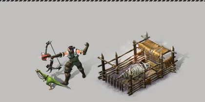

Home › Taming & Pets
 Pets Live
Pets Live
Summon pets to fight on their own, ride and carry items, feed them, unlock properties on the wheel, use their active skills, produce milk in pens, revive them and keep them from aging — max level 60
Animals you capture and tame become your pets once you form a bond. Summon them to follow you, ride them, carry items in their bag, let them help in fights on their own or with their active skill, or put them in a pen to produce milk or train for levels.

What you can do Live
- Summon / return — one at a time · animals in a pen or roaming can't be summoned · a knocked-out pet can be summoned but only as a body that must be revived first (Revival)
- Ride — rideable species only (speed depends on species, e.g. Raptor 700 · Mammoth 160)
- Animal bag — slots depend on species, e.g. Raptor 10 · Sabertooth 30 · Ankylosaurus 150 · Triceratops 240 · Mammoth 300 · Brachiosaurus 500
- Feed to restore vigor · rename (1–16 characters) · set free (the animal is gone forever · items in its bag go back to your bag)
- Roaming — let animals roam your Tamed Island · there are 5 roaming slots and you can buy more with the «Roaming Expansion Ticket», 30 Durango Coins per slot (up to 13 purchases = 18 slots in total · slots are counted per character) · roaming animals don't age, can't produce or train, and items in their bag disappear
- Fight on their own when you are in combat mode — see Pets that fight for you
- Unlock properties on the wheel as the pet levels up, and draw an active skill at level 60 — see Property wheel · Active skills
- Reset rank (needs a «Rank Reset Ticket», earned from events) — you see the rolled rank first, then accept it or keep the old one · accepting the new rank wipes all properties and the active skill, and the number of property slots follows the new rank
- Break the bond (turn the pet back into a Rein) needs one «Animal Bond-Breaker Ticket» (used up) — species that can't be un-bonded can't
How many animals you can own Live
| Skill | Maximum owned animals |
|---|---|
| None | 8 |
| Animal Handling I / II / III / IV | 9 / 10 / 11 / 12 |
- The pet window and the top bar show «count / maximum»
- Counted: summoned animals, stored animals, animals in a pen · not counted: animals roaming your Tamed Island, and Reins you have not bonded yet
- Once full you can't capture wild animals, bond Reins or bring a roaming animal back — a message tells you, tools don't wear and the Reins stay in your bag · set one roaming or set one free first
- Swapping one for one (send 1 roaming, bring 1 back) always works, even when full
- If you already own more than the limit, none of your animals disappear — you just can't add more until you are below the limit
- The pet window's button for bringing a roaming animal back now works
Pets from Shop packages Live
Reins from animal packages (sold in the Shop) hold an already tamed animal — press Form a Bond from your bag right away, no pen needed · its rank is rolled the same way as a successful pen taming · full health and fullness · 60-day lifespan · it still counts toward how many animals you can own
Vigor and feeding Live
A pet's vigor (300 max for every species) drops only while it is summoned, and is used for fighting, skills and production
| Species | Vigor lost per second | Full to empty |
|---|---|---|
| Raptor · Direwolf · Oviraptor · Ornithomimus, etc. (18 species) | 0.05 | ~100 minutes |
| All other species (83) | 0.09 | ~55 minutes |
| Food | Vigor restored |
|---|---|
| Leaf · Minnow | 40 |
| Meat | 50 |
| Nutritious Animal Feed | 500 |
| Highly Nutritious Animal Feed | 700 |
| Infinite Vigor Feed | Vigor stops dropping for a while |
- Only animal food can be fed (the feeding menu lists it) · a full pet can't eat normal food (food that carries property values can still be fed when full)
- Herbivores can eat only herbivore food and carnivores only carnivore food — feeding the wrong kind shows a warning and nothing is used up · all-purpose food (for example Shop feed, medicine) works for both
- Food with property values (fed inside a pen or from your bag) raises the odds of those properties on the wheel — see Property wheel
- Attack and Provoke skills, and fighting on their own, need at least half of max vigor (150)
Health, attack, defense and revival Live
- A pet's health, attack and defense come from the original stat table (health = species constant × (level + 24)²) · the defense shown on the pet screen is the same value that reduces damage when it is hit · pets regenerate 0.3% health per second
- Max health can be raised by properties and skill buffs — the bar really gets longer, but the extra health is not filled in at once
- If wild animals bring it to 0 health the pet falls and stays as a body in the world · you can summon a fallen pet (the body appears next to you) but can't ride it, use its skills or have it fight until it is revived
- Revive: tap the fallen pet and choose the revive menu (in the Thai game the menu is named «บันทึก») or press the revive button on the pet screen → full health, vigor at least half · free, no medicine needed
Example stats for level-60 pets (species that aren't in the original table use the closest profile, e.g. Tyrannosaurus uses Tarbosaurus · aged pets have half the stats):
| Species | Health | Attack | Defense |
|---|---|---|---|
| Raptor · Oviraptor · Pictaraptor · Deinonychus | 1,323 | 63 | 240 |
| Direwolf · Sabertooth · Dilophosaurus · Ornithomimus · Pavomimus · Megaloceros | 2,941 | 84 | 240 |
| Ankylosaurus | 8,820 | 252 | 360 |
| Deinotherium (small elephant from the Shop) | 13,230 | 252 | 270 |
| Tarbosaurus | 17,640 | 336 | 550 |
Lifespan and aging Live
- A pet captured in the wild lives for 30 days from bonding · pets from the Shop, gifts or (some) event animals live 60 days — then they show as "Old" and their stats are halved (health, health regen, attack, defense, speed, bag, max vigor, accuracy, etc.)
- An old pet can't start new production or training in a pen (a job already running finishes)
- Roaming on your Tamed Island stops the aging clock
- Animal Anti-Aging Remedy (15/30/45/60 days) gives life time back, but never beyond the full lifespan
Pets that fight for you Live
When you are in combat mode (you hit an animal, or an animal hits you into combat mode), your summoned pet joins the fight by itself — nothing to press
- Target = the one you selected (none selected = whoever is hitting you) · it stops when you leave combat mode or the target dies · the target must be within 15 tiles of you
- The pet plays its species' real attack moves (lunging/jumping when the target is a little farther away) · damage = the pet's attack through the same penetration formula as Combat · it walks around deep water or cliffs to stand and fight, and doesn't join if it can't reach the target
- Wild animals compete for a target: a wild animal remembers the damage you and your pet did to it (the pet's damage is multiplied by that species' value — Ankylosaur land tortoise ×3, all others ×1) and goes after whichever side did more · a pet takes full damage by the formula and can be knocked out (Revival)
- Conditions: pet summoned, not knocked out, not in a pen, not being ridden · a species that can fight (a few ornamental ones such as the Labrador or fancy Phenacodus can't) · vigor at least half to join, then it keeps fighting until vigor runs out (fighting costs no extra vigor) · you are not standing in water
- EXP: a summoned pet (not knocked out, not in a pen or roaming) gets 20% of the EXP your character earns from every source (hunting, gathering, etc.) — even a level-60 character at the cap still gives the pet 20% of the EXP it would have earned
- Pets don't hit players, and players can't hit other people's pets
Property wheel Live
Each pet has property slots set by its rank — the higher the rank, the more slots — and each slot opens when the pet reaches a set level
| Rank | Slots | Opens at pet level |
|---|---|---|
| S | 5 | 20 · 30 · 40 · 50 · 60 |
| A | 4 | 20 · 30 · 40 · 60 |
| B | 3 | 20 · 40 · 60 |
| C | 2 | 30 · 60 |
| D | 1 | 60 |
When the level is reached the pet discovers a property — the wheel spins and rolls one tag, then you accept it or spin again (the «Attribute Discovery Rate» page shows each tag's odds) · tags raise the pet's stats, for example speed, attack, defense, bag size, vigor, max health, health regen, accuracy and production amount
- The wheel has a «No Ability» slot of about 20% — landing on it means that step passes without a tag, but you get a consolation item in your bag (by mail if your bag is full) · you can spin again as usual
- Spin again in the same step with T Stone depending on the pet's level — the first respin costs about 797 (level 20) · 1,436 (30) · 2,454 (40) · 3,898 (50) · 5,805 (60) and gets more expensive every time (the 2nd at level 20 ≈ 906) — or use a respin ticket · a tag you already hold is not rolled again (the «No Ability» slot can repeat)
- Feeding food that carries property values raises that tag's odds on the wheel (its slice gets bigger and an up-arrow appears in the list page) — feeding inside a pen or from your bag both count, and the stored amount resets when you accept a property
- The 4 pet stamina tags were removed from the wheel (they had no effect in game)
- All slots opened + level 60 → you can draw an active skill
Active skills Live
Each pet has 1 active skill (in the game they are called «special behaviors») out of 37 skill sets · strength follows the skill's rank C–S
How you get one — the pet must be level 60 with all property slots opened (Property wheel) before you can draw a skill · the first draw is free · redrawing costs 100 Warp Gems, +100 more each time up to 1,000 (or use a redraw ticket) · a redraw may give the same skill again · the result depends on the species and the properties it has (species without a skill of their own get a general skill), and every species can draw
| Type | Examples | Effect |
|---|---|---|
| Attack | Bite · Rush · Back Kick · Chemical Warfare | The pet plays the skill's real move on the target you're fighting (it runs or lunges up to 6 tiles to reach it) · damage per hit = the pet's attack ×2 · area moves hit everything in the area |
| Provoke | Provoke | Wild animals within 3.5 tiles around the pet go after the pet instead of you |
| Buff | Bared Fangs · Run Free · Strong Back · Healing Helper · Pack Mule | Temporarily raises your pet's or your own stats — the effects in the description really work (for example the pet's max health, slower vigor loss, or less energy spent when you gather or build) |
- Skills work while the pet is summoned · each use costs 20 vigor · cooldown depends on the skill and rank (e.g. Bite 12–15 s · Provoke 30–33 s · Strong Back 300 s)
- A skill works only in its own situation: attack and provoke skills in combat mode · some buffs outside combat, some while riding — pressing one at the wrong time shows a message saying when it can be used and costs no vigor
- Attack and provoke skills can't be used while you stand in water
Production (milk) and training in pens Live

Put a pet in an animal pen (Makeshift Pen · Small Pen · Medium Pen) → choose the pet → Production or Training → wait for the timer, then collect items and pet EXP
| Production / Training | Time | Vigor used | Pet EXP (production / training) | Unlocks at pet level |
|---|---|---|---|---|
| Lv.1 | 1 h | 150 | 40 / 100 | 1 |
| Lv.2 | 2 h | 170 | 110 / 270 | 10 |
| Lv.3 | 4 h | 190 | 290 / 700 | 20 |
| Lv.4 | 8 h | 270 | 1,100 / 2,700 | 30 |
| Lv.5 | 10 h | 460 | 3,900 / 9,700 | 40 |
| Lv.6 | 12 h | 590 | 15,000 / 38,000 | 50 |
- Milk comes from production by mammal pets such as Phenacodus, Macrauchenia, Female Megaloceros, Direwolf, Skunkodus: each round gives Milk or Animal Droppings, 50% each
- Male Megaloceros only gives Animal Droppings · Bumblebee Phenacodus gives Honey 50% / Milk 30% / Animal Droppings 20%
- Amount per round = (2 + pet level ÷ 10) × the production level's multiplier (1 · 5/3 · 7/3 · 10/3 · 14/3 · 6), rounded down — a Lv1 pet on Production Lv.1 gives 2 · properties for production amount add to it, as shown on the pet screen
- 9–17% chance of a bonus item (coin · worm · corn seed) · item level = pet level
- Training gives the pet EXP in the second number of each cell (no items) and takes the same time and vigor as production of the same level
- Production/Training Lv.5–6 needs more than 300 vigor, so raise your pet's max vigor first · an old pet can't start a job
Max level 60 Live
- Pets can level up to 60 with pet EXP — from production and training in pens, from helping in fights, and from 20% of the EXP your character earns (Pets that fight for you)
- You can form a bond when your Survival category level reaches the Rein's level · Reins show at most level 60 (Animals above level 60) — a player whose Survival category is 60 can bond animals of any level
- A wild animal captured on a level-60 island may be Lv61–65 — that pet keeps its level but can't level up further with EXP
Choosing a Tamed Island Live
The first time you go to your Tamed Island you pick 1 of 5 maps (can't be changed afterwards) — see Choosing your Tamed Island layout · Tamed Islands are safe islands with no wild animals at all (no bosses) — to capture animals you have to go to other islands